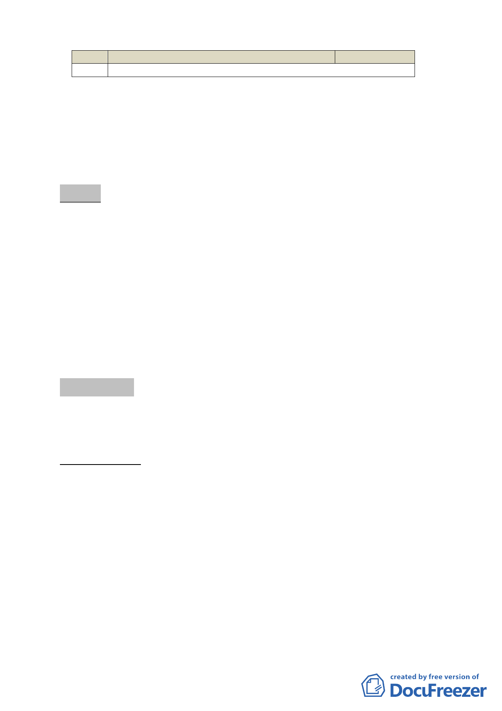

項次 使用類組
說明 Δ：附條件允許使用
允許使用程度
四、 全案係市府98年5月25日府都規字第09831683000號公告公開
展覽並函送到會。
五、 公民或團體所提意見：計0件。
六、 辦理單位：臺北市政府。
七、 法令依據：都市計畫法第24條。
決議：本案併討論事項三，請吳委員清輝擔任召集人組成專案小
組，由市府（都市發展局）先就原「修訂臺北市南港區都
市計畫（主要計畫）通盤檢討案」內北側編號 I-8-1 五個
街廓策略型工業區全區開放空間品質之確保、都市設計準
則之研擬及投資計畫書之格式等議題送專案小組進行釐清
後，再續提委員會議審議，以確保本區透過整體規劃、分
區開發能獲致較好的環境品質（專案小組成員經會後徵詢
委員意願由吳委員清輝、喻委員肇青、郭委員肇立、洪委
員鴻智、許委員中光、于委員俊明、羅委員孝賢等人組成）。
討論事項 三
案名：擬訂台北市南港區南港段一小段 922、922-1、923、935
地號等 4 筆土地策略型工業區細部計畫案
案情概要說明：
一、位置及面積：
本基地南臨重陽路，北接松河街，西側為首都客運總站，
東側為二層私人廠房。基地面積 4,036 平方公尺。
二、計畫緣起：
本基地位於臺北市南港區北側策略型工業區內，依 90.9.28
公告「修訂台北市南港區都市計畫（主要計畫）通盤檢討案」
規定，維持原使用強度，且案經內政部都委會決議仍應另行
擬定細部計畫，妥予規範該工業區允許使用項目及配合修正
-4-